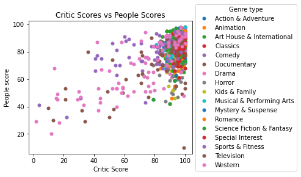

|
Marks
- Area: The data is shown with respect to specific
states relative to spacing as well as showing the
proportion of votes for each political party
- Points: At the bottom it shows points representing the
electoral votes for states that divide them accordingly
Channels
- Color: Hue
- Represents the party that won that state's electoral votes
- This is a good mapping because it clearly differentiates
between the two parties and the states they won
- Position: Horizontal and Vertical
- Represents where the state is in the country as a map
- This is a good mapping because it accurately reflects where
the state is in respect to the rest of the country
Colormap
- Categorical
- Represents the party that won that state's electoral votes
with Democrat as blue and Republican as red
- This is a good mapping because people associate these colors
with these political parties historically
|

|
Marks
- Points: point represents a batted ball
Channels
- Color: Saturation and Hue
-
Colors represent how above or below average the ball's scoring value is
-
This is a good color map. Pink represents a ball that has below-average scoring value, and orange represents above-average scoring value. Within each color, there are varying saturations to show how above or below average each ball is.
Colormap
- Divergent
-
Colors represent how above or below average a ball's scoring value is, with white representing the average.
-
This is a good mapping as it shows which balls are below/above average and has a scale as to how below/above average each ball is.
-
It could also be argued that each side of the average is Sequential, as there is varying saturation depending on how far from the average the ball's scoring value is.
|
|

|
Marks
- Points: each point represents a movie
Channels
- Color: Hue
- Each color represents the genre type of the movie, which is a categorical attribute.
- This is a good color map because each genre is represented by its own color, with a legend to show what color each genre is associated with.
- Position: Horizontal and Verical
- The position of each point is determined by its critic rating and people (general watchers) rating, and represents quantative data as each rating is a number
- This is a good mapping because you can see the critic scores and people scores in relation to each other, and easily compare how movies were received by different groups.
Colormap
- Categorical
- The color map is representing the categorical attribute of movie genres, with each movie genre having its own color
-
This is a good mapping because each genre has its own color that aren't chosen to be representing a range, and you can compare how movies of different genres were received.
|